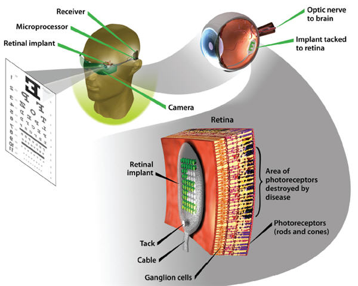
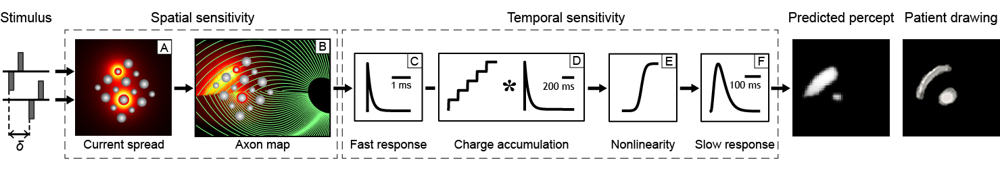

pulse2percept: Models for Sight Restoration¶
By 2020 roughly 200 million people worldwide will suffer from retinal diseases such as retinitis pigmentosa (RP) and age-related macular degeneration (AMD). RP is identified by a progressive degeneration of photoreceptors beginning in the peripheral retina, whereas photoreceptor degeneration in AMD begins in the macula (see figure below).
Visual loss typical of later stages of retinitis pigmentosa (A) and macular degeneration (B). Source: Action for blind people (UK).
Consequently, a variety of retinal sight restoration technologies are being developed to target these diseases.
Electronic retinal prostheses¶
Analogous to cochlear implants, the goal of electronic retinal prostheses is to produce meaningful visual information by electrically stimulating remaining retinal cells. Several types of retinal prostheses are currently under development, including epiretinal prostheses (where the implant is placed on the ganglion cell surface within the vitreous space), subretinal prostheses (where the implant is placed between bipolar cells and the retinal pigmented epithelium), and suprachoroidal prostheses (where the implant is placed either between the choroid and the sclera or contained within the sclera). All of these approaches are similar in that light from the visual scene is captured and transformed into electrical pulses delivered through electrodes to stimulate the retina.
However, these devices do not restore anything resembling natural vision: Interactions between the electronics and the underlying neurophysiology result in significant distortions of the perceptual experience. For example, epiretinal prostheses face the challenge that they do not only activate ganglion cell bodies, but also their axons. This leads to a perceptual ‘smearing’ of the stimulus, producing percepts that resemble ‘comet streaks’:
Simulations of perceptual distortions as a result of axonal stimulation.
An image of a Snellen chart is overlaid on the retinal surface (left).
The position of the retinal implant (subtending 12 deg) is shown by a red
dashed box.
The predicted effect of axonal stimulation on the image is shown for different
values of lambda (describing the activation sensitivity of a passing axon fiber
as a function of distance).
Source: Fine
and Boynton 2015.
What would the world look like to someone with a bionic eye?¶
We have developed a computer model that has the goal of predicting the perceptual experience of retinal prosthesis patients. The model was developed using a variety of patient data describing the brightness and shape of phosphenes elicited by stimulating single electrodes, and validated against an independent set of behavioral measures examining spatiotemporal interactions across multiple electrodes.
The model takes as input a series of (simulated) electrical pulse trains—one pulse train per electrode in the array—and converts them into an image sequence that corresponds to the predicted perceptual experience of a patient:
A virtual patient¶
The following are two example simulations illustrating the predicted perceptual experience of a retinal prosthesis patient:
The videos show that patients may see fuzzy, comet-like shapes or blurred outlines, or experience temporary disappearances if the object moves too fast.
Simulations such as these, which provide an insight into the perceptual outcomes of prosthetic vision, are likely to be critical for providing realistic estimates of prosthetic vision, providing regulatory bodies with guidance into what sort of visual tests are appropriate for evaluating prosthetic performance, and improving current and future technology.
Acknowledgements: this work was supported by a grant from the Gordon & Betty Moore Foundation, and from the Alfred P. Sloan Foundation to the University of Washington eScience Institute.